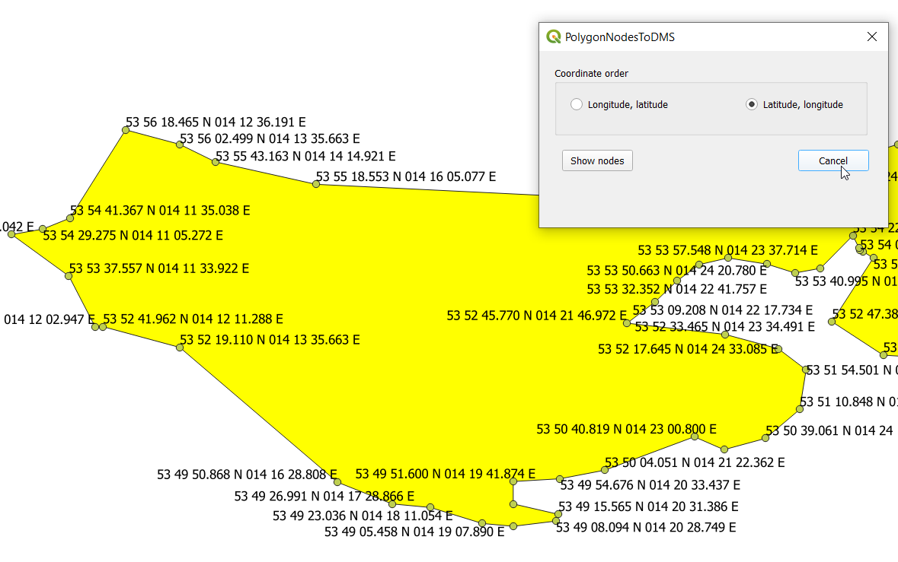

Description
PolygonNodesToDMS allows user to display polygon nodes (vertices) in DMS format.
Degrees, minutes, second format is widely uesd for example in aviation industry and charting to describe airspace shape.
GitHub repository: PolygonNodesToDMS
Usage
To display polygon nodes in DMS format:
- Open PolygonNodesToDMS plugin.
- Ensure that active layer has Polygon, Multipolygon geometry type.
- Select one polygon (multipolygon).
- Select cooordinate order to display (1).
- Press button Show nodes to (2).
- Nodes for selected polygon will be displayed in chosen coordinate order in DMSH (degrees, minutes, seconds, hemisphere) format.
Notes:
- Nodes with DMSH string format are kept in memory layer.
- Memory layer name is according to the following pattern:
NodesDMS_[YYYY]_[MM]_[DD][HHMMSS.ssssss] example: NodesDMS_2021_04_08_204438.727141.
- Each time Show nodes button is pressed memory all feature in memory layer are removed and new ones added for current selected polygon.
- Memory layer example:
Usage examples
Cooridinate order Latitude, longitude

Cooridinate order Longitude, latitude